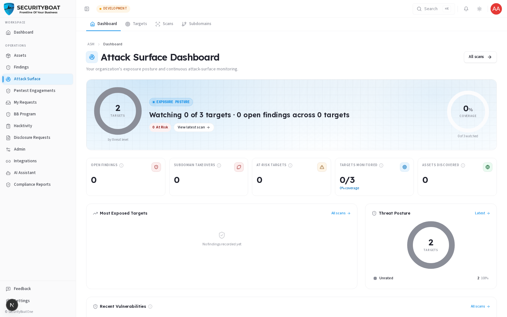
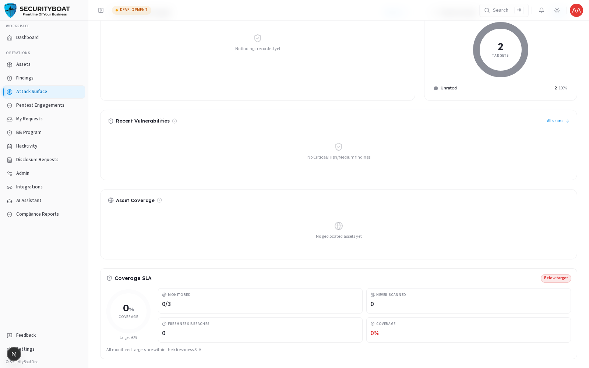
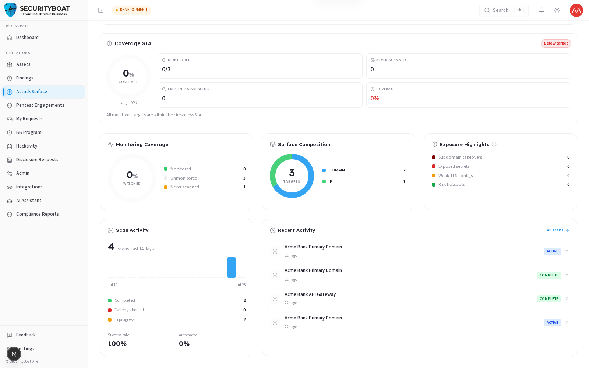
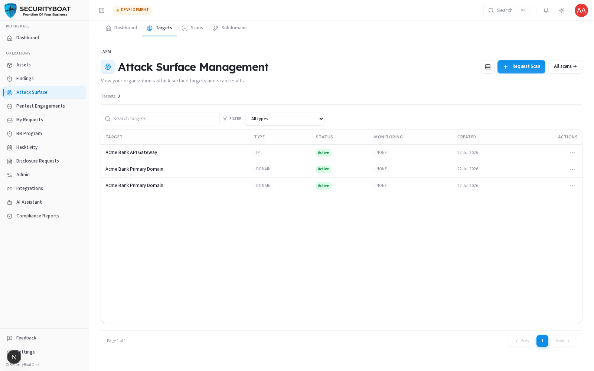

11. Attack Surface (ASM)
11. Attack Surface (ASM)
Availability: ASM is a platform-gated module. You'll only see Attack Surface in the sidebar if your organisation is onboarded for ASM. If it's not there, your org isn't subscribed to ASM — talk to your CSM.
11.0 What ASM is and why it matters
Attack Surface Management (ASM) continuously discovers and monitors everything your organisation exposes to the internet — domains, subdomains, IPs, open ports, technologies, cloud resources — and flags weaknesses before an attacker finds them. Where a pentest engagement is a point-in-time deep test, ASM is always-on breadth: it watches your perimeter between engagements.
For a client, ASM is a read-only exposure console scoped to your own organisation. SecurityBoat runs the scanners; you consume the results.
11.1 What each client role can do
| Action | Client Admin | Client TPM | Client Viewer |
|---|---|---|---|
| View the ASM dashboard, targets, scans, subdomains | ✅ | ✅ | ✅ |
| Request a new target to be scanned | ✅ | ❌ | ❌ |
| Set a target's monitoring cadence / SLA | ✅ | ❌ | ❌ |
| Create/delete targets, trigger scans directly | ❌ | ❌ | ❌ |
Why clients don't run scans directly: scanning is an active operation with real-world impact, so SecurityBoat staff own the "arm the scanner" step. A Client Admin can request a target (it's created in a
Requestedstate, auto-scoped to your org); staff review and approve before any scan runs.
Navigation
Click Attack Surface in the main sidebar menu. It has tabs: Dashboard, Targets, Scans, Subdomains.
11.2 The Dashboard (Exposure Posture Console)



KPI strip — what each number means:
| KPI | Meaning | Why it matters |
|---|---|---|
| Open Findings | Total open exposures + cloud findings, from the newest completed scan per target. | Your outstanding perimeter risk. |
| Subdomain Takeovers | Dangling DNS records pointing to deprovisioned services. | High-severity — an attacker could claim the subdomain. |
| At-Risk Targets | Targets whose latest scan scores "At Risk" (threat score > 60). | Where to focus first. |
| Targets Monitored | Targets on a recurring schedule vs total. | Coverage — unmonitored targets are scanned on demand only. |
| Assets Discovered | Subdomains, IPs, ports, technologies found. | The true size of your exposed surface. |
Panels below the KPIs:
- Posture band / Threat posture donut — targets classified At Risk / Needs Attention / Secure / Unrated.
- Most Exposed Targets — ranked by finding count; click through to the scan.
- Recent Vulnerabilities — newest Critical/High/Medium findings, highest severity first.
- Asset Coverage map — geographic spread of discovered IP assets.
- Coverage SLA — how fresh your monitoring is against the target freshness SLA.
- Monitoring Coverage / Surface Composition — watched vs unwatched, and a breakdown by target type.
- Compliance Posture (cloud scans) or Exposure Highlights (takeovers, exposed secrets, weak TLS, hotspots) when there's no cloud scan.
- Security Posture Dimensions & Drift (cloud) — IAM, encryption, attack surface, logging scores, and how they changed since the last scan.
- Scan Activity — a 14-day scan histogram.
The AI Assistant is "aware" of this dashboard — you can ask it things like "what is Coverage SLA?" or "why is my threat score high?" and it will explain using your live numbers.
11.3 Targets

A target is a domain, IP, or ASN registered for scanning. The list shows each target's type, monitoring cadence, last scan, and status. Click a target to see its scan history and details.
- Client Admin can request a new target (auto-scoped to your org; staff approve before scans run) and adjust a target's monitoring cadence (how often it's re-scanned) and freshness SLA.
- Client TPM / Client Viewer view targets read-only.
A target you request sits in a
Requestedstate and any monitoring you set stays dormant until SecurityBoat staff approve it — approval is the gate that lets scans actually run.
11.4 Scans & Subdomains
- Scans — every scan run against your targets, with state (Queued, Running, Complete, Failed) and a link into per-scan results (findings, discovered assets, compliance checks).
- Subdomains — the discovered subdomain inventory across your targets, including takeover risk flags.
11.5 How ASM connects to the rest of the platform
ASM findings flow into the unified Findings module (source = ASM), so a
perimeter exposure is triaged the same way as a pentest finding. If an ASM finding
warrants a deeper look, it can inform a new pentest engagement request.
Best practices
- Aim for high monitoring coverage — unmonitored targets only get scanned on demand, so gaps hide there. (Client Admin: raise cadence on important targets.)
- Treat subdomain takeovers as urgent — they're cheap for attackers to exploit.
- Watch the drift panel after changes — new failures/regressions tell you if a deploy widened your surface.
Troubleshooting
| Symptom | Cause / Fix |
|---|---|
| No "Attack Surface" in the sidebar | Your org isn't onboarded for ASM. Contact your CSM. |
| Can't request a target / change monitoring | You're Client TPM/Client Viewer (read-only). Ask a Client Admin. |
| My requested target isn't being scanned | It's awaiting SecurityBoat approval — scans run only after a staff member approves the target. |
| Dashboard looks empty | No completed scans yet for your targets — results populate after the first scan finishes. |
← Previous: Integrations | Next: Bug Bounty →